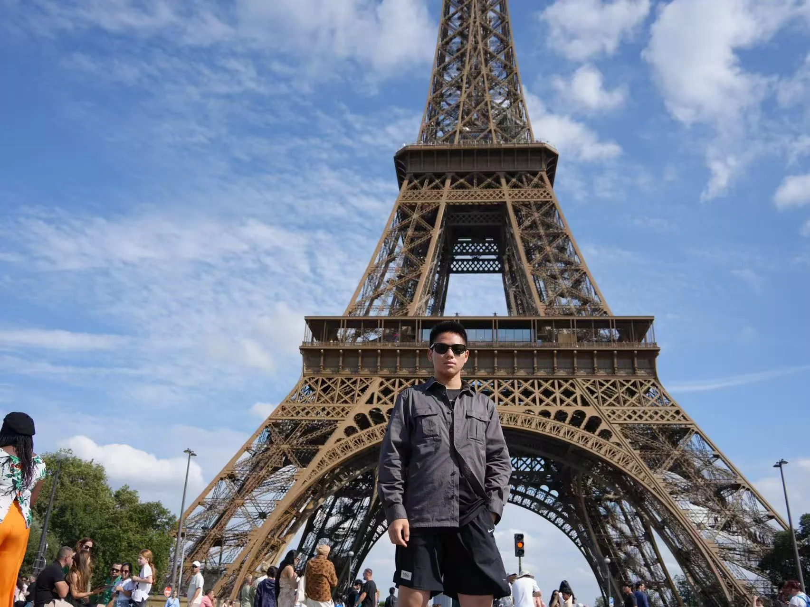
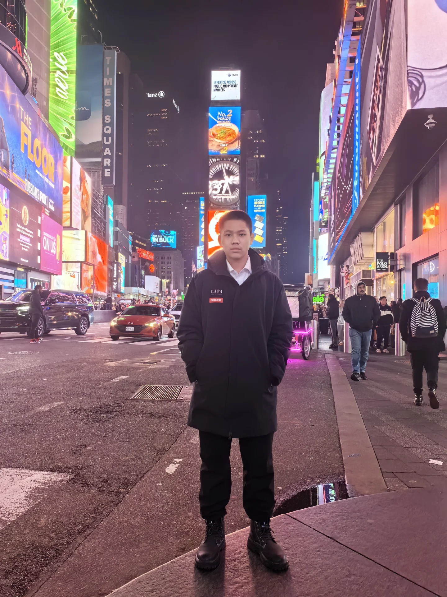
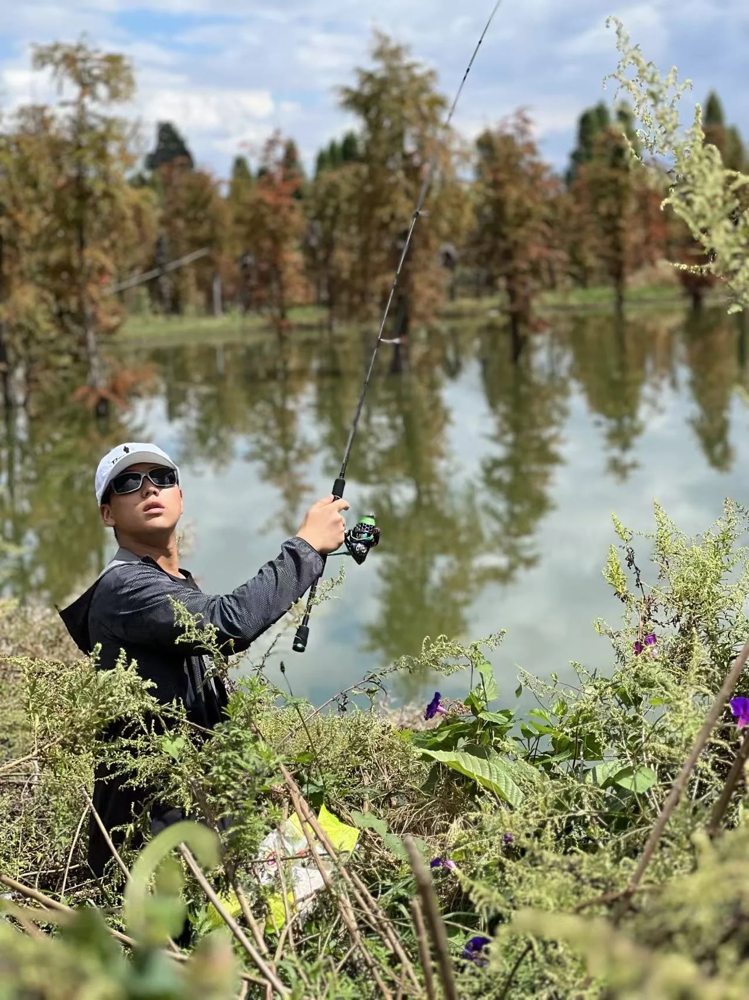
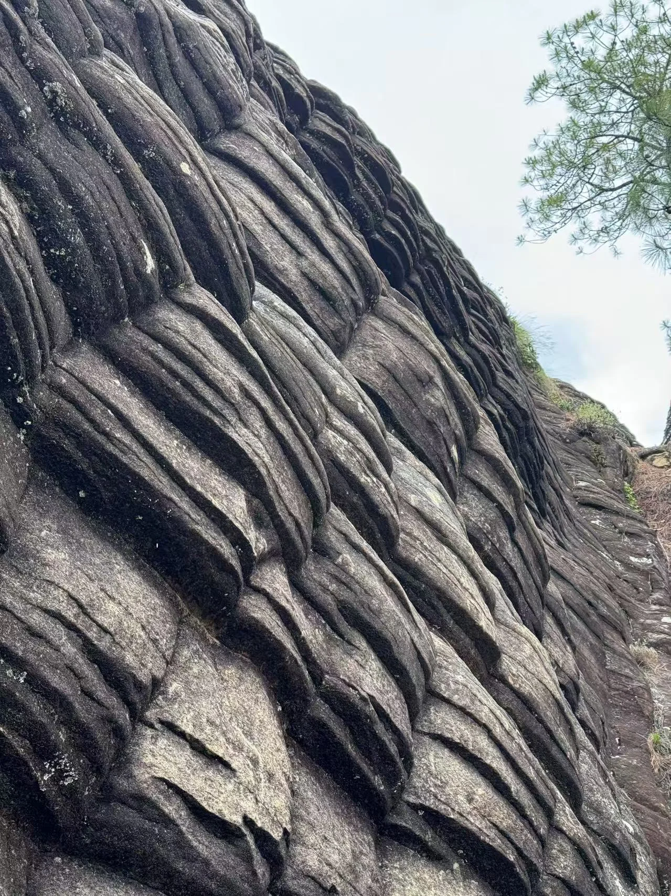
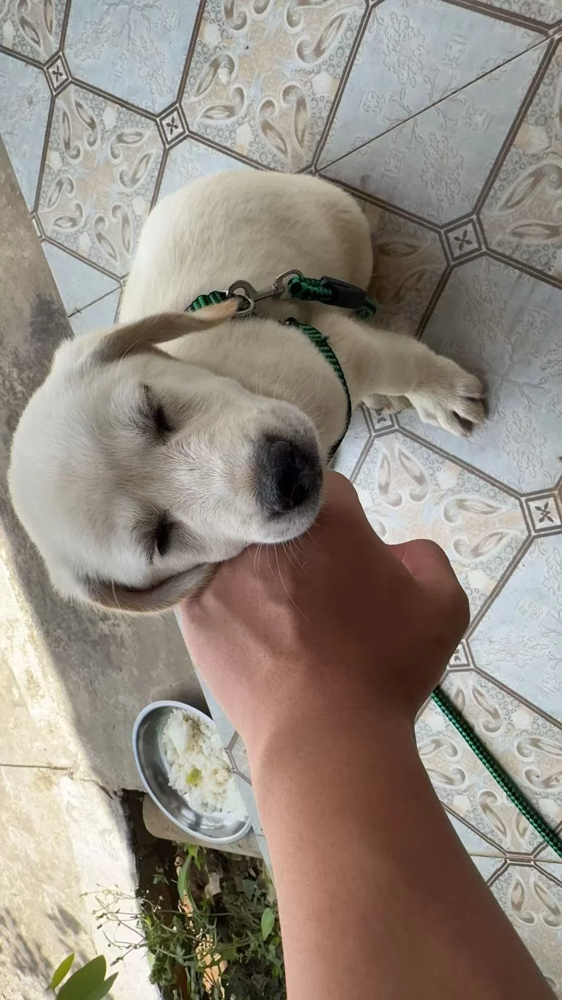

Saxophone Music & Photo Gallery
Documenting ten years of dedicated saxophone practice alongside personal photography from travel, outdoor adventures, hands-on hobbies, and everyday life.

Saxophone Repertoire Log (Grade 1 → Grade 10)
Official Distinction Certificate: 20240072010301051120007 · China National Opera and Dance Drama Theater
Practicing the saxophone across a decade of study has taught me patience, focus, and musical expression. Mastering challenging classical pieces requires steady daily practice and attention to tone, rhythm, and dynamics.
Chronological Repertoire Journey
Foundation in overtone production, consistent reed vibration, and stable airflow support.
Scale sequences, double staccato, vibrato control, and dynamic inflection.
Expressive romantic sonatas, altissimo register harmonics, and chamber ensemble performance.
Mastery of benchmark virtuoso concertos evaluated with top Distinction by national examiners.
"Music and nature share a common rhythm: patience, listening closely, and appreciating how small details come together into something beautiful."
Photo Gallery: Travel, Outdoors & Everyday Life
Snapshots capturing memorable travel moments, outdoor adventures, hands-on hobbies, and everyday life. Click any photograph to view in full size.

Visiting the Eiffel Tower
Standing before the iconic Eiffel Tower on a clear, sunny summer day during my visit to Paris.
Underwater Scuba Swing
Exploring the open ocean in full scuba gear and sitting on an underwater swing surrounded by deep blue water.

Times Square at Night
Walking through Times Square in the evening, surrounded by the bright billboard lights and vibrant street energy.

Lakeside Fishing Afternoon
Enjoying a quiet afternoon by the water, casting a fishing line and admiring the reflections among the trees.

Yunnan Weathered Rock Cliffs
Naturally carved stone patterns and rhythmic contours captured along the mountain cliffs during an outdoor hike.

Fish Skeletons in Display Cases
Two completed fish skeletons carefully assembled from individual bones and preserved inside custom acrylic display boxes.

Desert Scorpion in Its Habitat
Observing my desert scorpion active on the gravel and sand of its terrarium during evening feeding.

Puppy Resting on My Hand
A sweet, quiet moment with an affectionate white puppy resting its head comfortably in my hand.